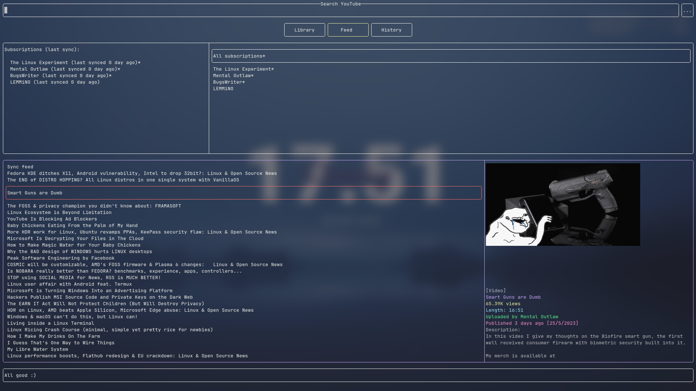
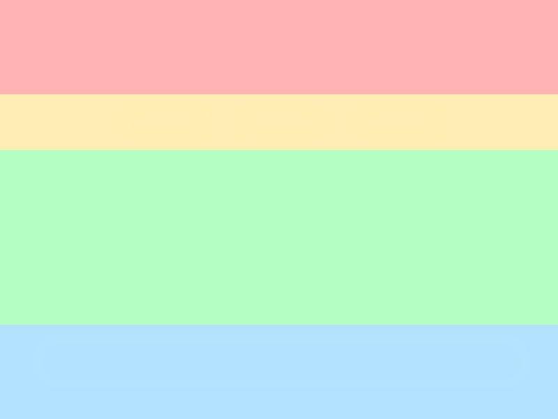

Overview
Written in Rust, the YouTube TUI is a lightweight and user friendly TUI for browsing YouTube content from the terminal.

It is like an app launcher, it launches other programs to do the heavy lifting (for example, mpv for playing videos).
Consider regenerating config files on updates to allow new features.
Customisable
The YouTube TUI can be customised through config files, they are located in ~/.config/youtube-tui and are in the YAML format.
Here's an example of the config file:
mouse_support: true
invidious_instance: https://vid.puffyan.us
max_watch_history: 50
allow_unicode: false
images: Sixels
refresh_after_modifying_search_filters: true
provider: YouTube
env:
browser: firefox
video-player: mpv
youtube-downloader: yt-dlp
terminal-emulator: konsole -e
Anything from layouts to colours and keybindings can be customised, more on that later.
Dependency-free*
See installation#features for more info on dependencies.
The YouTube TUI does not work on its own, it is instead like a TUI frontend for programs like mpv or yt-dlp/youtube-dl.
However, the programs to launch can be changed, and therefore the YouTube TUI does not rely on any specific dependencies to run.

Powerful
The YouTube TUI allows you to browse YouTube with (almost) all of it's features, functions including:
- View popular/trending videos
- View information about channels, playlists and videos
- Use search filters to sort and filter search results
- Save browsing history
It also includes features like:
- Vim-like commands
- Mouse support
- Extensible keybindings system
- Offline library
- Subscriptions
What it doesn't have
- [URGENT] Replace the no-longer-going-to-compile
typemapdependency with either a self implementation of it or a useable crate. - Strip down some libraries to reduce compile speed.
- Add command section for channel main page (first priority)
- Up arrow command history + Ctrl arrow keys move between words
How to contribute
You will need a general knowledge of the Rust programming language, and the ability to understand my spaghetti.
- Open an issue to make sure nobody else is working on the same feature
- Write code
- Open a pull request
- Get merged?
Or just fix that typo in README -_-
Installation
The YouTube TUI is not intended for Windows, pull requests to make it work are welcome.
Install from Crates.io (recommended)
Crates.io is a repository for programs written in Rust, and the YouTube TUI is available there.
To install using this method, you will need rustc and cargo present. Here's a tutorial on how to get them.
Now, run the following command:
cargo install youtube-tui
To check and update all programs installed from Crates.io, you can use CLI tools like cargo-update.
AUR for Arch Linux (recommended)
The YouTube TUI is available in the AUR here.
Use an AUR helper like yay to install.
yay -S youtube-tui # lastest crates.io release, recommended
yay -S youtube-tui-git # latest git version, potentially untested
yay -S youtube-tui-full-bin # default binary (out of date)
yay -S youtube-tui-nodefaults-bin # minimal binary (out of date)
Installation on NixOS (recommended)
Add the following Nix code to your NixOS Configuration
environment.systemPackages = [
pkgs.youtube-tui
];
Build from source
Use the cargo command:
cargo install --git https://github.com/siriusmart/youtube-tui
Confirm YouTube TUI has been installed
Run the following command in terminal:
youtube-tui
If installed correctly, a TUI should be launched. Press q to close the TUI.
Features
The TUI has features that can be enabled/disabled when compiling.
cargo install youtube-tui # install with all default features
cargo install youtube-tui --no-default-features # install without any features enabled
cargo install youtube-tui --no-default-features -F 'halfblock' # install with only HalfBlocks support (but not Sixels)
cargo install youtube-tui --no-default-features -F 'clipboard' -F 'sixel' # can install with multiple features by doing this
cargo install youtube-tui --all-features # install with all features (even if not included in default)
halfblock (default)
Display images through HalfBlocks, work best in terminals with TrueColour support.
sixel (default)
Display images with Sixels, allows the display of images at full definition. Not present on windows.
Enabling this will also enable halfblock.
Requires libsixel.
clipboard (default)
Allows clipboard pasting in commands and search bar.
Requires libxcb.
Basic usage
Here is a basic how-to guide on the TUI.
Cursor
The cursor can be moved using arrow keys, or Vim keybindings (hjkl).

The item with the cursor hovering will have a red outline.
Everything here refers to the latest default config, including the keybindings.
| Function | Key(s) |
|---|---|
| Select | Enter |
| Deselect | Esc |
| Cursor up | Up arrow / k |
| Cursor down | Down arrow / j |
| Cursor left | Left arrow / h |
| Cursor right | Right arrow / l |
| Previous page | Backspace / Alt + Left arrow |
| First page history | Home |
| Clear page history | End |
| Paste from clipboard | Ctrl + V |
| Enter command mode | : |
| Quit | q |
Selection
Selecting an item allows you to move the cursor within that item, to select an item, press Enter.
When nothing is selected, you can move the cursor between items, to deselect from an item, hit Esc.
Searching
Type the search query when the search bar and press Enter, use arrow keys to move the cursor around.
To apply search filters, select the button with 3 dots (...) to the right of the search bar, hit enter to start modifying and enter again to save. Pressing Esc should reload the current search page to apply the filters.

Playing videos and playlists
This part assumes that you use
mpvas your video player,konsoleas your terminal emulator,yt-dlpas your YouTube video downloader, andfirefoxas your browser.If that is not the case, you can learn how to change that in the custom commands section.
Press Enter to select a video or playlist from any lists, then move the cursor to the bottom item where you can play, download and open the webpage in browser.
Feeds
Feeds allows you to view updates from subscribed channels, similar to how subscriptions works on YouTube.

Command mode
Command mode is like that of Vim, it can be started by pressing : when nothing is selected.
More about commands in the next chapter.
Command bindings
Keys can be bind to a command, more about it in the next chapter.
For example Ctrl + F launches your web browser.
Buttons
Buttons are similar to hyperlinks, it allows you to navigate between pages.
Mouse click control

Mouse click controls has been added, you can now use your mouse to navigate around the TUI. Here are the general rules:
- Clicking an item moves the cursor to that item, clicking again selects the item
- Clicking on buttons, or items on a list has the same effect as pressing
Enteron them - Clicking outside a popup closes the popup
However, there are some downsides to not using your keyboard.
- Cannot move up or down to items not on screen in a list (you can do that with
UporDown arrow) - Cannot access function keys like
BackspaceorQ
Library
Items can be bookmarked and saved to library, they can also be saved to be viewed offline.
Commands
Commands can be entered to the TUI by pressing the : key, the same as in Vim. Some commands have shorter alternatives that can be used instead.
Env variables can be used by passing in as
${key}, such as:channel ${channel-id}when in a video or playlist page.
Loadpage commands can also be used when launching, for example youtube-tui loadpage popular or youtube-tui popular.
Commands can be joined together using
;;.
Below are the avaliable commands:
Loadpage
loadpage can be used to load a specific page.
loadpage popular (alt: `popular`)
loadpage trending (alt: `trending`)
loadpage watchhistory (alt: `watchhistory`)
loadpage search [search query] (alt: `search [search query]`)
loadpage video [id or url] (alt: `video [id or url]`)
loadpage playlist [id or url] (alt: `playlist [id or url] `)
loadpage channel [id or url] (alt: `channel [id or url] `)
History
history is used to manage page history (Backspace equivalent).
history back (alt: `back`)
history clear
Utility
reload (alt `r`)
reload configs (alt `reload/r config/configs`)
flush
quit (alt `q`, `exit`, `x`)
run [command]
parrun [command]
The
flushcommand is used to run all tasks in queue immediately, this is usually done automatically.But for when tasks are stacked up in the same event loop and the order of which they are executed matters, this command can be used to force the already stacked up commands to be ran first.
runis used for running blocking commands, whileparrunis non-blocking.
Library
bookmark [id] Bookmark item with ID (item must be already loaded)
unmark [id] Remove bookmark item with ID
togglemark [id] Toggle bookmark status
sub/sync [id or url] Add channel to subscription, or sync an existing channel
unsub [id or url] Remove channel from subscription
syncall Sync all subscriptions
Text commands
Text commands generates a text only response without launching the TUI.
help
version
Command bindings
Commands can be binded to keys just like normal key bindings, bindings can be edited in commandbindings.yml. Below are the default bindings:
| Key | Description |
|---|---|
Ctrl + F | Open page in browser |
Ctrl + C | Copy page url |
Ctrl + P | Play hovered video |
Ctrl + A | Play hovered audio |
Shift + A | Play hovered audio on repeat (shuffled if hovering a playlist) |
Config files
Config files are located in ~/.config/youtube-tui, modifying them changes the behavior of the TUI accordingly.
Config files will be generated if not present, backed up and regenerated if there is an issue reading it (most likely caused by changes made by user or updates).
In the following sections we will go through all config files including:
The main config
The main config file is located in ~/.config/youtube-tui/main.yml.
Example main.yml
mouse_support: true
invidious_instance: https://y.com.sb
write_config: Try
max_watch_history: 50
allow_unicode: false
message_bar_default: All good :)
images: Sixels
refresh_after_modifying_search_filters: true
image_index: 4
provider: YouTube
env:
browser: firefox
terminal-emulator: konsole -e
youtube-downloader: yt-dlp
video-player: mpv
Below are the description of each of the fields:
mouse_support
Whether mouse click events are supports, if false then mouse will not do anything to the program.
Accept: true/false
invidious_instance
The Invidious instance you want to use, a full list of Invidious instances can be found here here.
Accept: string of a valid url to an Invidious instance
write_config
Whether to write to config after every read, this allows for auto-formatting the config files, as well as removing any error/deprecated options and adding new options.
| write_config | Description |
|---|---|
Must | Always write to config, panics if failed. |
Try | Tries to write to config, continues if failed. |
Dont | Don't write to config at all |
main.ymlis a loaded withTryno matter what.
Accept: Must/Try/Dont
max_watch_history
The maximum length that the watch history can hold, a value higher will record more items, but will also result in a larger file size in storage.
Accept: positive integer below 2your CPU architecture - 1
allow_unicode
Enable unicode in video and playlist names, doing so may cause unwanted behaviors like video name continuing into the info field to the right.
Accept: true/false
message_bar_default
The default message displayed in the message bar.
Accept: any string
images
How to display thumbnails, if None is selected video thumbnails will not be downloaded in the first place.
Accept: Sixels/HalfBlocks/None
refresh_after_modifying_search_filters
Whether to refresh the current search page after search filters are modified
Accept: true/false
image_index
The index in the array of thumbnail qualities you want to download
Typically these are the avaliable qualities:
| Index | Label | Resolution |
|---|---|---|
| 0 | maxres | 1280 x 720 |
| 1 | maxresdefault | 1280 x 720 |
| 2 | sddefault | 640 x 480 |
| 3 | high | 480 x 360 |
| 4 | medium | 320 x 180 |
| 5 | default | 120 x 90 |
| 6 | start | 120 x 90 |
| 7 | middle | 120 x 90 |
| 8 | end | 120 x 90 |
Usually you don't want to use the max resolution as it will create a large gap between the page being loaded and before the thumbnails are started to get displayed
Accept: integer that is a valid index
Provider
This changes the ${url} and ${embed-url} of videos, allowing you to watch videos from Invidious if it is restricted on YouTube.
(Don't always use Invidious if YouTube is working, because first of all the load time if gonna be much slower, and secondly you will be DDoSing Invidious)
Accept: YouTube/Invidious
env
Env are variables that can be used in commands.yml, this allows you to change multiple commands by modifying just one env variable. And not to be confused with system/terminal environment variables, these are just "a thing" that you can use in the TUI.
Accept: string_key: string_value pairs
Commands config
The commands config file decides what options (that will run a certain command on select) to be display in the video and playlist page respectively, it is located in ~/.config/youtube-tui/commands.yml.
Example commands config
launch_command: loadpage popular ;; flush ;; history clear # suggested to set page to watchhistory if you don't want to wait for popular to load
video:
- Play video: ${video-player} ${embed-url}
- Play audio: ${terminal-emulator} ${video-player} ${embed-url} --no-video
- Play audio (loop): ${terminal-emulator} ${video-player} ${embed-url} --no-video --loop-file=inf
- View channel: :channel ${channel-id}
- Open in browser: ${browser} ${url}
- Download video (webm): ${terminal-emulator} ${youtube-downloader} -o ${download-path} ${embed-url}
- Download audio (opus): ${terminal-emulator} ${youtube-downloader} -o ${download-path} ${embed-url} -x
- 'Mode: ${provider}': '%switch-provider%'
playlist:
- Switch view: '%switch-view%'
- Play all videos: ${video-player} ${all-videos}
- Play all audio: ${terminal-emulator} ${video-player} ${all-videos} --no-video
- Shuffle play all audio: ${terminal-emulator} ${video-player} ${all-videos} --no-video --shuffle
- Shuffle play all audio (loop): ${terminal-emulator} ${video-player} ${all-videos} --no-video --shuffle --loop-playlist=inf
- View channel: :channel ${channel-id}
- Open in browser: ${browser} ${url}
- Download all video (webm): ${terminal-emulator} ${youtube-downloader} -o ${download-path} ${all-videos}
- Download all audio (opus): ${terminal-emulator} ${youtube-downloader} -o ${download-path} ${all-videos} -x
- 'Mode: ${provider}': '%switch-provider%'
Env variables
Notice that a lot of the commands contains the ${label} pattern, this actually replaces the text with the env variables set in main.yml, or is added by the current page (video or playlist) on-the-go.
Replacing all these with known values it might look something like this:
launch_command: loadpage popular ;; flush ;; history clear
video:
- Play video: mpv 'https://youtube.com/embed/dQw4w9WgXcQ'
- Play audio: konsole -e mpv 'https://youtube.com/embed/dQw4w9WgXcQ' --no-video
- Open in browser: firefox 'https://youtu.be/dQw4w9WgXcQ'
- Download video (webm): konsole -e yt-dlp -o '~/Downloads/%(title)s-%(id)s.%(ext)s' 'https://youtube.com/embed/dQw4w9WgXcQ'
- 'Mode: ${provider}': '%switch-provider%'
playlist:
- Switch view: '%switch-view%'
- Play all videos: mpv 'https://youtube.com/embed/Z8oiddSsB6I' 'https://youtube.com/embed/yiS0DPekSDQ' 'https://youtube.com/embed/YhM8GYuDFps' # and much more...
- Play all audio: konsole -e mpv 'https://youtube.com/embed/Z8oiddSsB6I' 'https://youtube.com/embed/yiS0DPekSDQ' 'https://youtube.com/embed/YhM8GYuDFps' --no-video
- Shuffle play all audio: konsole -e mpv 'https://youtube.com/embed/Z8oiddSsB6I' 'https://youtube.com/embed/yiS0DPekSDQ' 'https://youtube.com/embed/YhM8GYuDFps' --no-video --shuffle
- Open in browser: firefox 'https://www.youtube.com/playlist?list=PLdgHTasZAjYZlCXN9rTcX9LFOQ-RIrzCs'
- Download all video (webm): konsole -e yt-dlp -o '~/Downloads/%(title)s-%(id)s.%(ext)s' 'https://youtube.com/embed/Z8oiddSsB6I' 'https://youtube.com/embed/yiS0DPekSDQ' 'https://youtube.com/embed/YhM8GYuDFps'
- 'Mode: ${provider}': '%switch-provider%'
Global commands can also be used here. (Ones that start with an
:).
Below are the description of each of the fields:
video
Commands to be displayed in a video page.
Accept: string_label: string_command pairs
playlist
Commands to be displayed in a playlist page (commands view).
Accept: string_label: string_command pairs
Env reference
Does not include custom env set in main.yml.
| Name | Page | Value |
|---|---|---|
url | search, popular, trending, video, playlist | String url to the web page |
id | video, playlist | String id of the video or playlist |
channel-id | video, playlist | String id of the channel |
embed-url | video | String url to the embed video (required to play video using mpv from Invidious) |
all-videos | playlist | String urls separated by space to all embed videos in a playlist |
hover-url | trending, popular, search | Url of the currenly hovering item. |
hover-channel-url | feed | Url of the currenly hovering channel. |
hover-channel-id | feed | ID of the currenly hovering channel. |
hover-video-url | feed | Url of the currenly hovering video. |
hover-video-id | feed | ID of the currenly hovering video. |
all-ids | playlist | IDs of all videos in a playlist, separated with space. |
Keybindings config
The keybindings config binds each key to an action, or multiple keys for the same action. It can be found in ~/.config/youtube-tui/keybindings.yml.
Example keybindings config
'q':
0: Exit
Down:
0: MoveDown
'r':
2: Reload
Enter:
0: Select
'l':
0: MoveRight
Up:
0: MoveUp
'j':
0: MoveDown
End:
0: ClearHistory
Right:
0: MoveRight
Backspace:
0: Back
'h':
0: MoveLeft
F5:
0: Reload
'k':
0: MoveUp
Esc:
0: Deselect
Home:
0: FirstHistory
Left:
0: MoveLeft
4: Back
Keys
Keys can be:
- A single character (e.g.
'q') - Named keys (e.g.
Up,Down) - Function keys (e.g.
F5)
Key modifiers
Key modifiers are the modifier keys that are pressed along with the actual key, for instance in Ctrl + C would have the modifier Ctrl and the key C.
Each modifier has its own code, for instance Shift would be 1 and Ctrl would be 2. The final modifier will be the sum of all modifier keys. (Ctrl + Shift would be a 3).
Keys reference
All possible keys can be found here.
Enums are represented using the character
!, for example theqkey would be!Char 'q'
Shift + Qhowever would be!Char 'Q'with0as modifier code asShiftturnsqinto an upper case character.
Modifiers reference
| Modifier | Code |
|---|---|
| None | 0 |
Shift | 1 |
Ctrl | 2 |
Alt | 4 |
Super/"Windows" key | 8 |
Hyper | 16 |
Meta | 32 |
All key modifiers (if any are added) will be in the code.
Command bindings
Commands can be binded to keys (just like normal keybindings), it allows functionalities such as playing hovered videos. Bindings can be either global or page specific, it is located in ~/.config/youtube-tui/commandbindings.yml.
Example commandbindings config
global:
'f':
2: run ${browser} '${url}'
'c':
2: cp ${url}
video: {}
search:
'a':
2: run ${terminal-emulator} mpv '${hover-url}' --no-video
'A':
1: run ${terminal-emulator} mpv '${hover-url}' --no-video --loop-playlist=inf --shuffle
'p':
2: run mpv '${hover-url}'
watchhistory:
'A':
1: run ${terminal-emulator} mpv '${hover-url}' --no-video --loop-playlist=inf --shuffle
'p':
2: run mpv '${hover-url}'
'a':
2: run ${terminal-emulator} mpv '${hover-url}' --no-video
# etc
Specifications are same as comamnds.yml, the exact same envs can be used.
Default bindings can be found in this section.
Layout config
The layout config determins the position of where each item is placed, mainly their order. The config file can be found in ~/.config/youtube-tui/pages.yml.
Example layout config
main_menu:
layout:
- type: NonCenteredRow
items:
- SearchBar
- SearchFilters
- type: CenteredRow
items:
- Popular
- Trending
- History
- type: NonCenteredRow
items:
- ItemList
- type: NonCenteredRow
items:
- MessageBar
message: Loading main menu...
# and much more ...
Items
Each item is an individual "thing", these things can be optionally selectable, or hoverable by the cursor.
Rows
A row is a horizontal row of items, it can be either centered (like the buttons) or non centered (which will align to the left).
Non centered rows are faster and less crash prone compared to centered rows.
Each item are ordered from left to right.
Message
The message to display when loading the page.
Items reference
| Item | Can be used in page | Description |
|---|---|---|
| MessageBar | Any | The panel (default in the bottom of every page) that displays message and error messages |
| SearchBar | Any | A text field that searches that entered query |
| SearchFilters | Any | A button that brings up a popup for modifying search filters |
| Trending | Any | Loads the trending page |
| Popular | Any | Loads the popular page |
| History | Any | Loads the watch history page |
| ItemList | Main menu/search | Display multiple videos, channels, or playlists in a list |
| SingleItemInfo | Single item | Display info of one single item (a single video or playlist) |
| ChannelDisplay | Channel display | Display information of a channel, depending on the page |
| ChannelMain | Channel display | Loads the main channel page |
| ChannelVideos | Channel display | Loads the channel videos page |
| ChannelPlaylists | Channel display | Loads the channel playlists page |
Appearance config
Appearance config controls the colours and the "looks and feel" of the TUI, it is located in ~/.config/youtube-tui/appearance.yml.
Example appearance config
borders: Rounded
colors:
text: Reset
text_special: Reset
text_secondary: Reset
text_error: LightRed
outline: Reset
outline_selected: LightBlue
outline_hover: LightRed
outline_secondary: LightYellow
message_outline: '#FF7F00'
message_error_outline: LightRed
message_success_outline: LightGreen
item_info:
tag: Gray
title: LightBlue
description: Gray
author: LightGreen
viewcount: LightYellow
length: LightCyan
published: LightMagenta
video_count: '#838DFF'
sub_count: '#65FFBA'
likes: '#C8FF81'
genre: '#FF75D7'
page_turner: Gray
Below are the description of each of the fields:
borders
The style of the borders/outline, if outdated view here.
Accept: Plain/Rounded/Double/Thick
Literally everything else
Any colours, here are the 2 main represenations of colours, for more check out this page here.
Terminal colour
This can be modified by the themes of your terminal (e.g. white, green, etc).
Hex
Hex should be a string that starts with the # character, and can be from 000000 (black) to FFFFFF (white).
RGB color values has been deprecated
Default search options
The default search query/filters when launching the TUI, this can be found in ~/.config/youtube-tui/search.yml, but should not be "customised" like how you would to a config file because it's just a configurable default value.
Example search default value
query: ''
filters:
sort: Relevance
date: None
duration: None
type: All
Below are the description of each field
query
The default query when you launch the TUI.
Accept: any string
Sort
How the search results are sorted.
Accept: Relevance/Rating/Date/Views
How it works
This sections talks about roughly how this TUI works, crates, important structs and their location, and the main event loop will be mentioned.
Table of contents
- Framework talks about how a single frame is rendered, and how a single input is handled.
Framework
At the core of this TUI, is the framework from the tui-additions crate, it allows the program to render onto the screen, take inputs (mouse and keyboard) in an orderly fashion.
A Framework holds a bunch of other structs, a simplified version would looks something like this.
struct Framework {
state: Vec<Vec<Item>>,
cursor: CursorState,
selectables: Vec<Vec<(usize, usize)>>,
data: FrameworkData,
history: FrameworkHistory,
}
State
Holds a 2D array of items, but that is just the simplified version.
The State struct also holds the width of the items, heigh of the rows, and other details such as if the row should be centered or not.
Cursor
The cursor can be in one of these states.
- Selected - where an item is selected.
- Hover - when its being moved around.
- None - when the page first loads, the cursor does not have a state.
Selectables
This is an interesting one. As mentioned below, some items can be hovered when other cannot. Each selectables[x][y] maps to a selectable (hoverable) coordinate.
Instead of using a HashMap<(usize, usize)>, using a 2D array ensures that all x: 0..range and y: 0..range are mapped to a selectable item. And moving the cursor left is as easy as increasing x by 1, without having to worry about selectability check and stuff.
Data
There are 2 pools of data available - global and state.
Global data are global across all pages, this is mainly used to store config structs, as they are meant to be applied globally.
State data are exclusive to each page, this is done to ensure that each page will get the correct data.
For example, if state data is not used, the next page will overwrite data in the previous page, making going back in history impossible.
This showed how state data stays with the history snapshot of the page, whereas global data does not.
History
This stores the past states and data of the struct, pretty self explanatory.
Items
Items are placed across the screen in rows, each item is individual and changing of one should not affect others in anyway.

Diagram showing that individual items arranged in rows on screen.
Each item has a set of functions from the trait FrameworkItem:
.selectable(&self) -> bool
The function is ran on page load, it determines whether the item can be hovered by cursor or not.
Most item returns true, as they can be selected and hovered.
However there are some exceptions, including MessageBar and the big info display in channel home page.
PageButtons returns true in this function, as they can be hovered by cursor. Instead,
.select()is responsible for their special behaviour.
.select(&mut self, &mut Framework) -> bool
This function is ran when an item is selected (pressed enter on), it allows the item to modify its own state and the framework state. The returned boolean also determines if the selecting item will stay selected and capture key input.
Most items returns true in this function, for example SearchBar stays selected and captures key input after being selected, until deselect.
PageButtons returns false, as they don't want to say selected. This does not mean the function does nothing, they are still able to modify their own states and push a LoadPage task to queue.
.deselect(&mut self, &mut Framework) -> bool
This function is the exact opposite of the .select() function, it is called when the deselect keybinding (Esc) is pressed, or the mouse clicks somewhere outside the item.
All items returns true on this function.
A fun fact is that items can actually return false, and refuse to get deselected. This can be useful when waiting for a condition to be met.
.load_item(&mut self, &mut Framework, ...) -> Result
This is the function responsible for the loading of items. The YouTube TUI adds an empty item to the screen, then calls this function for the item to load itself.
An item that heavily rely on this function is ItemList, it loads video according to the current page, whether it's Library, History or Search.
Currently, this function can be very inefficient as items are loaded one after another (sync). This will improve once Rust implements async traits.
Errors will be displayed in MessageBar in the next frame.
.render(&mut self, &mut Framework, &mut Frame, area)
Items should be able to render itself within area of Frame, the area is different for each item, and should not overlap.
Each frame is rendered 2 times.
- Render all normal items.
- Render all popups, as they need to be above normal items.
Normal items should not render in the popup render, for example:
if popup_render {
return;
}
.key_event(&mut self, &mut Framework, KeyEvent) -> Result
Pretty self explanatory, selected item takes in a key event and do some modification to itself and/or the Framework state.
Errors will be displayed in MessageBar in the next frame.
.mouse_event(&mut self, &mut Framework, x, y) -> bool
Similar to key_event, this function takes in the relative x and y of the mouse click on the item.
The return boolean indicates if the item has been modified by the mouse click, if true then the screen will rerender.
Event loop
The event loop is like the glue that puts everything together.
Before the event loop
But before the TUI enters it's main event loop, it does several things.
1. Check what command is being ran.
If the command does not need to enter the main TUI, don't enter the main TUI.
For example, help or version just returns a text message on your terminal screen. In main.rs line 19, it is checked whether the entered command is a valid text command. If so, the program exits without ever reaching the TUI code.
2. Enable raw mode
If you've tried killing youtube-tui while it's running (killall youtube-tui), your terminal should be in a weird state - where everything, including mouse movement seem to be captured. That's the raw mode.
I have no idea what is special about it, but it is in the examples of tui-rs here (one of the main dependency of this TUI).
3. Init
There are a bunch of things happening in this stage, but it really just boils down to a few basic things:
- Reading/creating config files, subscriptions, libraries and inserting them to the pool of shared data (global data) within the framework struct.
Global data is used here, the reason should be obvious. All pages, should share the same config, there is no need to keep extra copies of the (usually) same thing and waste memory.
- Insert some structs needed for the TUI to run.
These structs includes Message storing the message to be displayed in message bar, and Status, useful for storing all sorts of values, for example helping with the running (mostly rendering) of the TUI.
- Move some files
Some files have to be moved to ~/.cache/youtube-tui/ from (usually) ~/.local/share/youtube-tui/ for stored content to be used by the TUI, this is why running multiple instances of the program can mess things up - as one instance exits the files got moved from .cache to .local, and the other instance no longer sees the files they thought was still in .cache.
The full init code is here
todo...
Changelogs
v0.7.3 (latest stable on crates.io)
Added
- Lazy feed syncing (configurable), so you are not actively ddosing the Invidious instance as badly.
Fixed
- Search bar no longer shows escaped search query: the original text string is displayed instead.
- Fixed something about labeling channels with * although no new video is published.
- Blank screen on loadpage if itemlist is empty.
v0.7.2
Added
- Feeds page, and the subscriptions system.
- Reduced compile time needed by a lot.
Fixed
- Search url not escaped, so searches with symbols or spaces are now working.
v0.7.1
Added
- Options for config loading. (
write_configinmain.yml) - Parrallel/blocking commands
parrun/run
Fixed
- Fixed crashing when launching without permissions to write to config files (issue 29)
v0.7.0
Added
- File system based caching
- Bookmark library
- Save video/playlists for offline viewing
Fixed
- Empty ItemList crash (issue 26)
v0.6.2
Added
- Command bindings
Fixed
- Image not cleared when going back to "switch view"
v0.6.1
Added
- Rework of the env system, now using environment variables provided by the OS as opposed to implmenting own version of env
- Ability to use envs in command mode
- Launch commands (including
youtube-tui help)
Fixed
- Screen blinking when pressing up arrow on the first item in playlist page, videos view
v0.6.0
Added
- Mouse support
- Vim-like commands
- Pasting with
Ctrl + Vin search bar and command mode
v0.5.3
Fixed
- Search bar could not handle non English characters (e.g. Russian)
v0.5.2
Added
- Improved config files (including hex colour support)
- Page turners (next/prev page in search)
Fixed
- Where the image and text are displaying in the same place, and the image is displayed over the text
v0.5.1
Added
- Image lazy loading (will not rerender image if already rendered)
- Optional features that can be disabled
v0.5.0
Added
- Entire TUI rewritten from scratch, now using the
tui-additionscrate - Sixels image support
- Improved config files
v0.4.4
Added
- Added default select item for each page (can be changed in
layouts.yml)
Fixes
- Video list view in playlists not working
- Channel view scroll causes panic
- Search options gray backgound + image covering popup
v0.4.3
Added
- Refreshing page
- Key modifiers for key bindings
- Image loading can be disabled
Fixes
- Fixed cache not being cleared after exit
Contributors
Siriusmart
Creator and main developer of YouTube TUI.
LuckyTurtleDev
Maintainer of the youtube-tui package on AUR.
Ruixi-rebirth
Maintainer of the youtube-tui on the NixOS repository.
Zaedus
Maintainer of the youtube-tui-full-bin, youtube-tui-nodefaults-bin and youtube-tui-git package on AUR.
Fractal Tess, msrd0
Fixed typos in README.